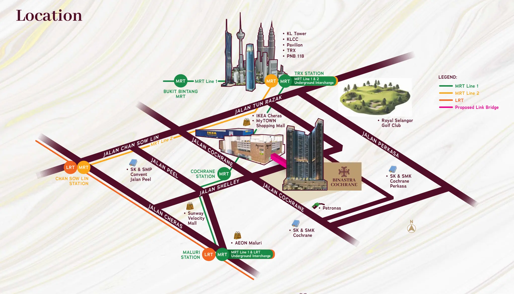
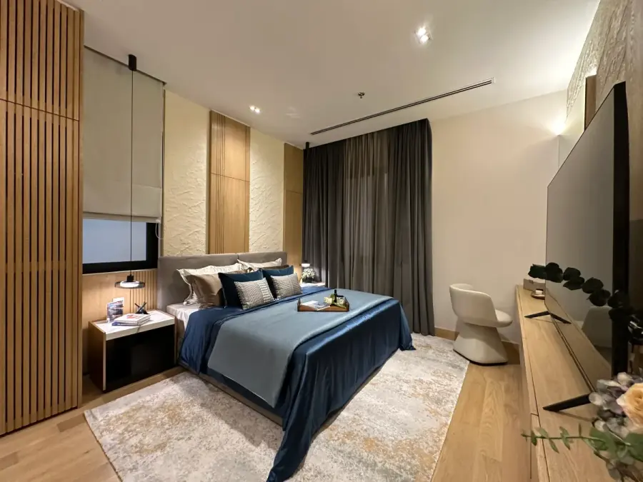
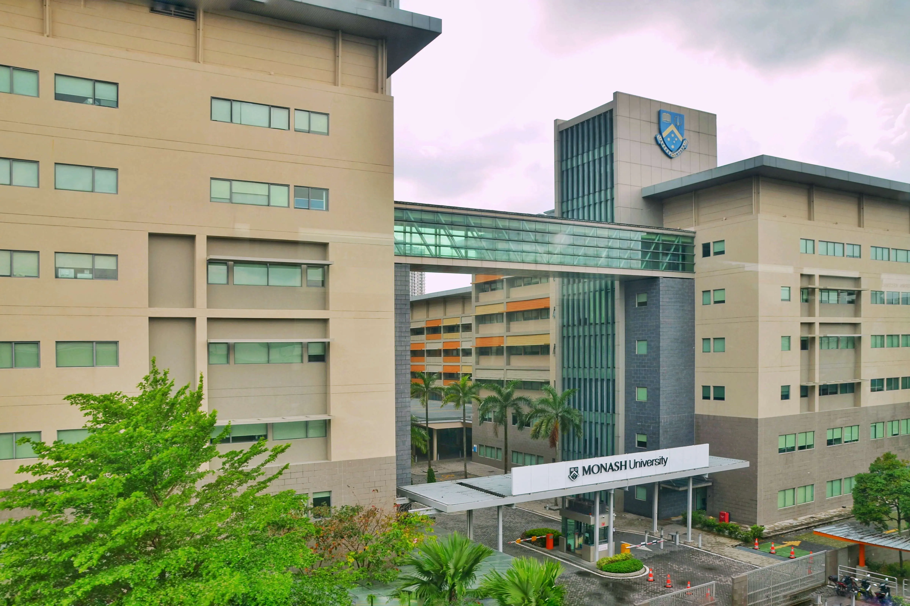
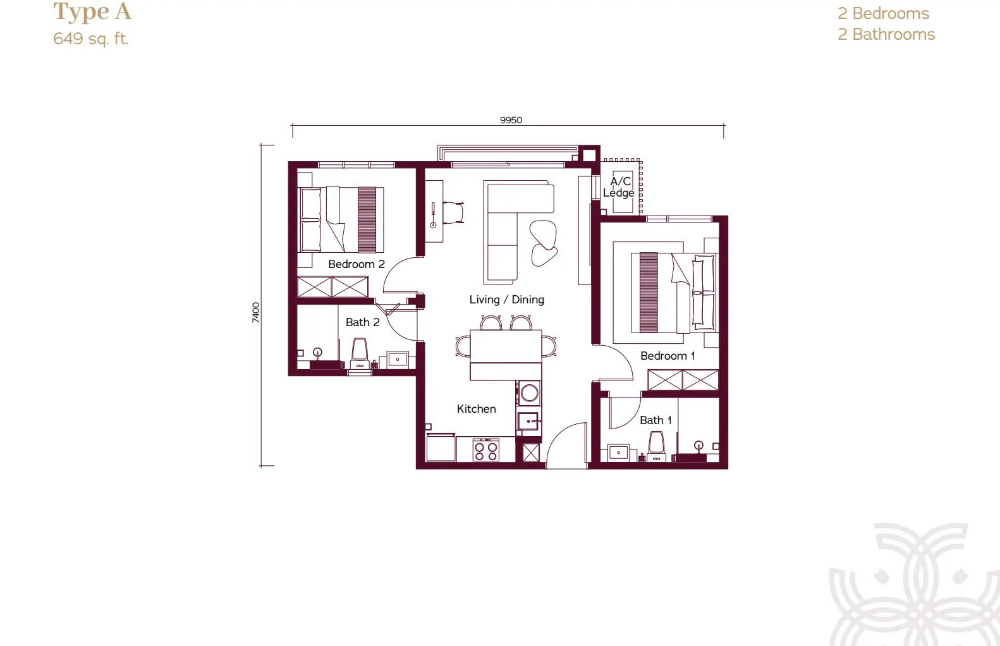
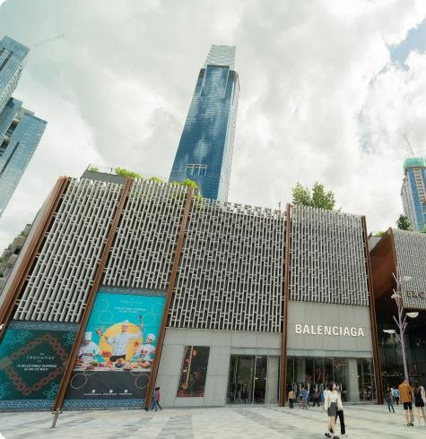
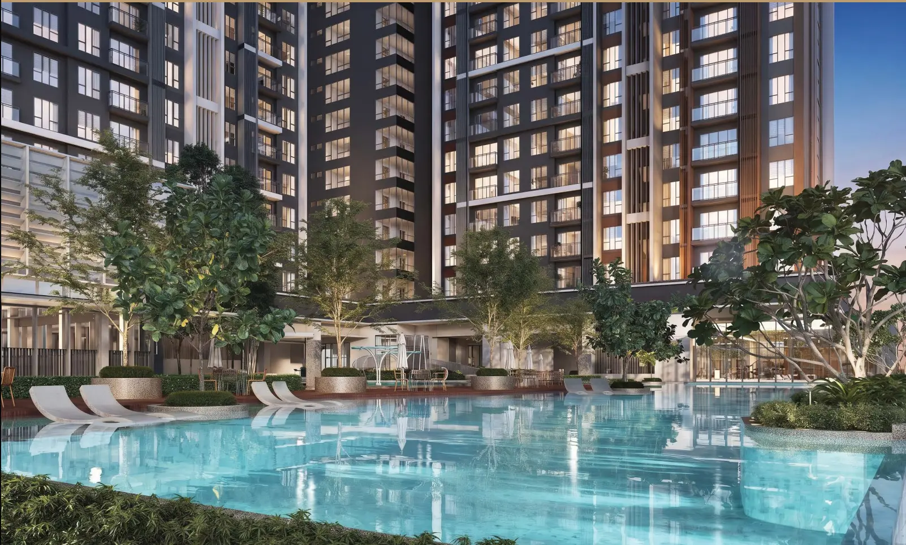

01
Freehold Ownership
Freehold residences in the heart of Cochrane, with potential for long-term capital appreciation.

LICENSED KUALA LUMPUR REAL ESTATE SERVICES
FEATURINGDiscover modern 2–3 bedroom freehold residences from 649–1,026 sq ft, including dual-key layouts and lifestyle facilities near TRX from RM680K.
VIEW PROJECT DETAILSUrban convenience, everyday connectivity and a forward-looking Kuala Lumpur address.
Freehold residences in the heart of Cochrane, with potential for long-term capital appreciation.

02Cochrane MRT links the district to TRX, Bukit Bintang and other established destinations along the Kajang Line.

03Spacious 2–3 Bedroom Layouts, 649–1,026 sq ft, Including Dual-Key Options.
Just 70m via a fully sheltered walkway to Cochrane MRT, only 1 stop to TRX, with easy access to Bukit Bintang and KL City Centre.
Enjoy sheltered access to MyTOWN Shopping Centre and IKEA Cheras, with 400+ retail shops, dining, entertainment and everyday essentials just moments away.

05Located near the upcoming Monash University campus, TRX business hub and major lifestyle destinations, with potential for future rental demand.
Explore future developments →Located in the heart of Cochrane, Binastra Cochrane offers excellent connectivity to TRX, Bukit Bintang and KL City Centre via MRT Cochrane. Surrounded by shopping malls, healthcare, education and lifestyle amenities, it offers convenience for modern city living.
GET EXACT LOCATIONAn established station on the Kajang Line, connecting the Cochrane district with the wider city. Walking routes and project access arrangements should be confirmed with your advisor.
70m from Binastra Cochrane
Cochrane MRT is the starting point for an established journey across Kuala Lumpur.
Surrounded by established retail and local amenities.
Malaysia's international financial district, home to approximately 30,000 workers, major multinational companies and a convenient MRT interchange.
Kuala Lumpur's premier shopping and entertainment hub, home to Pavilion KL, luxury brands, vibrant nightlife and world-class dining.
Home to the world's second-tallest skyscraper, featuring iconic architecture, premium offices and a landmark destination in Kuala Lumpur.


Discover the upcoming education and business developments shaping Kuala Lumpur's evolving city landscape.
Monash University, in partnership with TRX City, has announced a RM2.8 billion investment to develop its future Kuala Lumpur campus in the heart of TRX. Targeted to open in 2032, the campus is planned to accommodate up to 22,500 students and 1,700 staff beyond 2040. This major educational development could strengthen demand for student accommodation and create potential rental opportunities for nearby residences such as Binastra Cochrane.
Know More
Menara Ethos is an upcoming 41-storey premium office tower in Tun Razak Exchange (TRX), offering approximately 808,000 sq ft of office space, with PwC Malaysia set to establish its new headquarters there. With around 30,000 professionals already working across TRX, the development is expected to further strengthen Kuala Lumpur's international business district, potentially driving greater rental demand and long-term capital appreciation for nearby residences such as Binastra Cochrane.
Know More
.webp)
I’m Premm Enbasegaran (REN62971), a registered real estate negotiator with Affinity Realty Sdn. Bhd. With over 5 years of experience in real estate, I specialise in Kuala Lumpur’s residential property market, helping homebuyers and investors make confident, well-informed property decisions.
Together with my dedicated team, we assist both Malaysian and international buyers throughout their property journey, from selecting suitable units and comparing floor plans to understanding pricing, financing options and the purchasing process.
Through our direct developer relationships, we help clients explore the latest available units, developer rebates, promotional packages and incentives, subject to availability.
Our commitment extends beyond the purchase. We also provide rental management assistance, renovation coordination and post-handover support, ensuring a smooth property ownership experience.
Whether you’re purchasing your dream home or exploring investment opportunities at Binastra Cochrane, we’re here to guide you every step of the way — from your first enquiry to key collection and beyond.
GET IN TOUCHBinastra Cochrane Affinity Realty